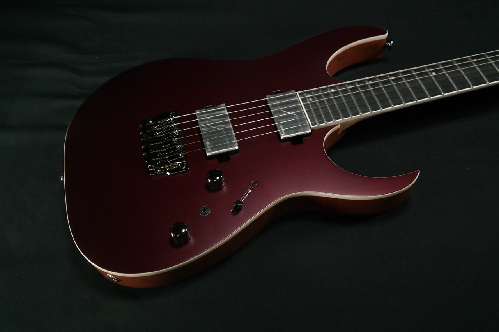

Noah
Let the music say what you can’t
Background
Since I was a child, I've been around music my whole life. My parents raised me playing music all the time like Radiohead lullabies to help me fall asleep, and took me to concerts at a young age. They also got me interested in playing an instrument in second grade where I started playing the keyboard. After a while playing the keyboard I was unhappy with it and wanted to switch to the guitar. This choice led me down a long journey of guitar playing, joining bands, and playing live shows.
Guitar
I started playing guitar

at 8 years old being taught by a teacher once a week. After a while of practicing, I built up the courage to join a band at a local music school called The Rockademy I stayed with this band for around 9 years until the beginning of 2026. Throughout our time together, we developed an audience online and locally, playing at venues all over the county. Recently, I am focused on expanding my skills and developing a better understanding of music theory.
Production
In the beginning of 2025, I began producing music digitally on a DAW called Fl Studio  I was inspired by a multitude of genres I listened to and my recording arts classes I had been taking in school. Throughout my time producing music, I have learned so much about creating music, mixing, mastering, and promoting my music. These advancements have increased my knowledge of sound design, composition, and working in a digital audio workstation I hope to continue and improve my skills over the coming years as I face new challenges.
I was inspired by a multitude of genres I listened to and my recording arts classes I had been taking in school. Throughout my time producing music, I have learned so much about creating music, mixing, mastering, and promoting my music. These advancements have increased my knowledge of sound design, composition, and working in a digital audio workstation I hope to continue and improve my skills over the coming years as I face new challenges.